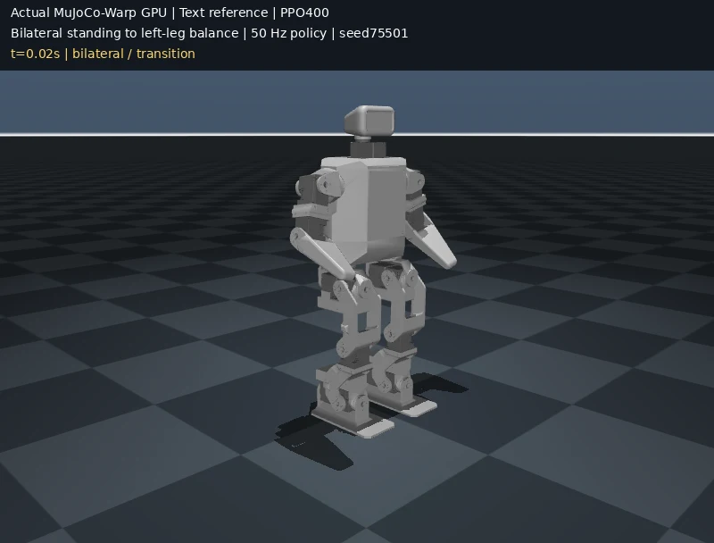
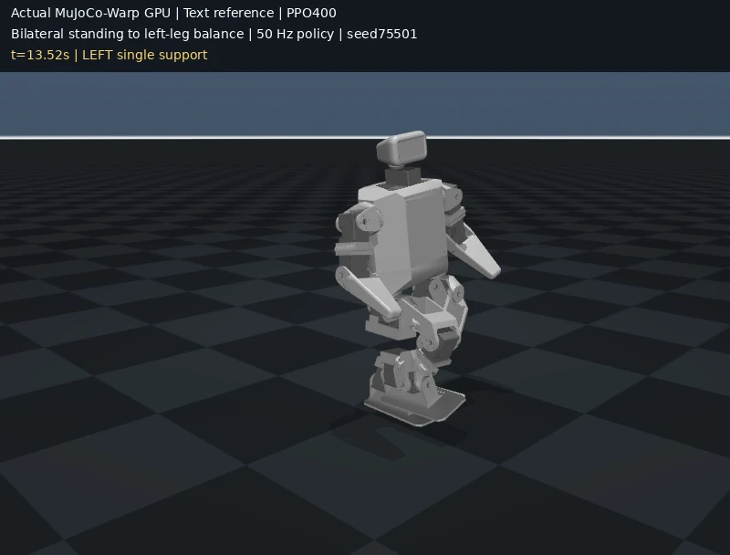

한 발 서기로 배우는 모방 강화학습
Nvidia Kimodo + Mjwarp 로 imitation RL 만들기
자세를 생성하는 AI와, 실제로 한 발로 서는 제어 정책은 어떻게 연결될까요? 실제 입력·코드·검증 영상으로 한 단계씩 배웁니다.
실제 문장 참조로 한 발 서기 정책을 학습했습니다.MuJoCo Warp GPU에서 PPO 400회를 학습하고, 양발에서 왼발 지지로 전환하는 동작을 검증했습니다.
용어부터 시작하기01 / 먼저 익히는 언어
아홉 가지 용어로 전체 흐름 이해하기
아래에서 ‘자세를 만든다’, ‘행동을 정한다’, ‘물리로 실행한다’가 각각 다른 일이라는 점만 잡으면 됩니다.
- 모션 Motion
- 시간에 따라 이어지는 자세입니다. 한 장의 사진이 자세라면, 여러 자세가 이어진 6초 영상은 모션입니다.
- 운동학 Kinematics
- 관절 각도가 바뀔 때 발·손·몸통이 어디에 놓이는지 계산합니다. 그 자세를 만들 힘이 충분한지는 따로 확인해야 합니다.
- 정책 Policy
- 현재 상태를 보고 다음 행동을 정하는 규칙입니다. 여기서는 ‘몸이 기울었으니 발목 목표를 얼마나 고칠까’를 결정하는 신경망입니다.
- 모방 강화학습 Imitation Reinforcement Learning, imitation RL
- 좋은 자세를 참고하면서, 직접 실행해 받은 점수로 정책을 배우는 방법입니다. RL은 Reinforcement Learning, 즉 강화학습의 약자입니다.
- PPO Proximal Policy Optimization
- 정책을 조금씩 개선하는 강화학습 알고리즘입니다. 한 번의 학습에서 행동 확률이 너무 크게 바뀌지 않도록 제한합니다.
- MuJoCo Multi-Joint dynamics with Contact
- 중력·관절·마찰·충돌을 계산하는 물리 시뮬레이터입니다. 이름은 ‘접촉을 포함한 다관절 동역학’을 뜻합니다.
- MjWarp MuJoCo Warp
- NVIDIA GPU에서 여러 MuJoCo 환경을 병렬로 계산하는 구현입니다. 정책을 학습하는 PPO와 역할이 다릅니다. 이 사례에서는 64개 환경의 GPU PPO 학습에 사용했습니다.
- 리타기팅 Retargeting
- 한 몸체의 모션을 다른 몸체에 맞추는 작업입니다. 큰 G1의 자세를 작은 Microban에 옮길 때 관절 수·길이·회전 방향을 맞춥니다.
- 접촉 Contact
- 발과 바닥이 맞닿아 힘을 주고받는 상태입니다. 한 발 서기에서는 실제 왼발 접촉이 몸의 무게를 지지해야 합니다.
곧 등장할 IK, q, Observation, Reward도 알아두기
IK: Inverse Kinematics, 역기구학‘왼발은 바닥에 평평하게 두고 무게중심은 그 위에 두자’ 같은 목표를 만족하는 관절 각도를 찾습니다.
q / q* / qposq는 관절 각도, q*는 참고할 관절 각도입니다. MuJoCo의 qpos는 몸체의 위치·방향과 관절 각도를 함께 담은 배열입니다.
Observation o / Action aObservation은 정책이 읽는 현재 상태, Action은 정책이 내는 보정값입니다. 이 사례의 행동은 19개 관절 목표의 residual입니다.
Reward r행동이 얼마나 좋았는지 주는 점수입니다. 참조 자세와 닮을수록, 왼발로 안정적으로 버틸수록 점수가 올라갑니다.
02 / 자세를 생성하는 프로그램
Kimodo는 3D 모션을 만드는 NVIDIA의 생성 모델입니다
NVIDIA Kimodo는 자연어와 자세 조건을 받아 사람이나 휴머노이드의 3D 모션을 만드는 생성 모델입니다. 텍스트로 원하는 행동을 설명하면 Diffusion 모델이 여러 프레임의 관절 동작을 생성합니다.
입력과 출력은 무엇인가요?
입력은 만들 동작을 설명하는 문장입니다. 사전학습한 Diffusion 모델이 여러 프레임의 관절 위치와 회전을 생성합니다.
이번에는 NVIDIA 공식 공개 데모의 Kimodo-G1-RP-v1 모델로 6초짜리 모션을 생성했습니다. 오른쪽은 그 실제 출력의 운동학적 재생입니다.
이 참조를 Microban에 맞추고, 중력과 접촉을 고려해 균형을 잡는 Policy를 뒤 단계에서 학습합니다.
Reference motion. 문장으로 생성한 G1 동작의 6초 영상입니다. 2–5초의 한 발 자세를 학습용 참조로 사용했습니다.
03 / 실제로 보낸 쿼리
이 문장으로 6초의 모션을 요청했습니다
문장은 동작의 순서와 지지할 발을 명확히 적었습니다. 양발로 서기, 왼쪽으로 체중 이동, 오른발 들기, 왼발로 균형 잡기를 한 요청에 담았습니다.
실제 호출의 조건
- 모델
- Kimodo-G1-RP-v1
- 출력 길이
- 180프레임 / 30 Hz / 6초
- Denoising steps
- 100 DDIM
- Text guidance
- 2.0
- Constraint guidance
- 0.0
- 자세 조건
- 없음
- Seed / Num samples
- 14 / 1
- Postprocessing
- 사용하지 않음
Seed는 초기 난수를 고정합니다. Denoising steps는 생성 중 잡음을 정리한 횟수이며 영상 프레임 수가 아닙니다.
원하는 행동을 한 문장으로 적었습니다
A humanoid robot stands on both feet, slowly shifts weight onto its left foot, raises the right foot, and balances steadily on the left leg.“양발로 서 있다가 왼발로 체중을 천천히 옮기고, 오른발을 들어 왼발로 안정적으로 균형을 잡는다.”
await c.button("Clear All Constraints")
prompt = c.timeline["prompts"][0]
await c.send({
"type": "TimelinePromptUpdateMessage",
"prompt_id": prompt["uuid"], "new_text": PROMPT,
})
await c.send({
"type": "TimelinePromptResizeMessage",
"prompt_id": prompt["uuid"],
"new_start_frame": 0, "new_end_frame": 179,
})
for label, value in (
("Seed", 14), ("Denoising Steps", 100),
("Text Weight", 2.0), ("Constraint Weight", 0.0),
("Real robot rotations", True),
):
await c.update(label, value)
await c.button("Generate")공식 공개 데모에 Python 클라이언트로 입력했습니다. c는 데모의 Viser WebSocket 메시지를 보내는 Helper입니다. 실제 클라이언트 코드
결과는 NPZ와 CSV로 저장했습니다. NPZ는 관절 위치와 회전 행렬을, CSV는 로봇의 Root pose와 관절 각도인 qpos를 담습니다. 이 영상은 생성된 자세를 보여줍니다. 질량과 중력 아래에서 버티는 능력은 다음 단계에서 학습합니다.
04 / 다른 로봇으로 자세 옮기기
G1 동작을 Microban에 맞추기
G1과 Microban은 다리 길이, 관절 축, 몸의 비율이 다릅니다. 생성된 각도를 이름만 맞춰 복사하면 발이 다른 다리에 닿거나, 무게중심이 지지하는 발 밖으로 나갈 수 있습니다.
한 발 자세를 뽑고 조정합니다
생성된 2–5초 구간의 91개 프레임에서 Median pose를 뽑았습니다. 들어 올릴 다리의 움직임을 작은 로봇에 맞게 조정한 뒤, Inverse Kinematics (IK)로 왼발의 바닥 방향과 무게중심을 맞췄습니다.
실제로 지지할 수 있게 맞춥니다
왼발 지지 · 오른발 Collider 높이 44.56 mm · 관절 범위 위반 0. 이 자세를 중심으로 양발에서 체중을 옮기고 오른발을 드는 Transition reference를 만들었습니다.
Retargeting과 IK 계산 코드 보기
frames = list(range(60, 151))
median = np.median(csv[frames], axis=0)
# Recorded Microban adaptation parameters
lift_flexion_scale = 2.8
stance_knee_target_rad = 0.3
minimum_arm_abduction_rad = 0.25
minimum_lift_abduction_rad = 0.18
# IK residual: COM above stance foot + level sole
def residual(x):
d.qpos[:] = orig
d.qpos[idx] = x
mujoco.mj_forward(m, d)
foot = d.site("left_foot")
return np.r_[
40 * (d.subtree_com[1, :2] - foot.xpos[:2]),
6 * (foot.xmat.reshape(3, 3)[:, 2] - [0, 0, 1]),
.12 * (x - orig[idx]),
1.5 * (x[3] - args.stance_knee),
]참조는 전체 6초 영상을 그대로 따라가는 궤적이 아니라, 생성 구간에서 얻은 한 발 자세를 조정한 것입니다. Preview는 원본 CSV를, retargeting은 관절 Rest offset을 반영한 변환 CSV를 사용했습니다. 두 Convention의 차이는 IK 단계에서 함께 처리했습니다.
05 / 물리 안에서 학습하기
자세를 닮으면서, 넘어지지 않도록
참조 자세에 가까울수록 Imitation reward를 줍니다. 동시에 왼발 접촉, 오른발 높이, 몸의 기울기, 무게중심을 평가합니다. Policy는 현재 상태를 보고 관절 목표를 조금씩 수정합니다.
정책은 무엇을 보고 행동하나요?
Policy + Value network
- Observation
- 70차원
- Action
- 19개 관절 목표의 보정
- Policy network (residual)
- 70 → 64 → 64 → 19, 은닉층 tanh · 출력층 선형
- Value network
- 64 → 64 → 1, tanh
- Mean action
- Balance feedback + Residual
- Residual scale
- 0.15
Observation에는 관절 각도와 속도, 자세와 몸의 움직임, 참조와의 차이, 발의 높이와 무게중심 정보가 들어갑니다. Policy network는 Action을, Value network는 앞으로 얻을 Reward를 예측합니다.
PPO는 어떤 설정으로 학습했나요?
MuJoCo Warp GPU
- Num environments
- GPU 64
- Rollout length
- 32 steps
- Discount factor γ
- 0.995
- GAE λ
- 0.95
- Clip range ε
- 0.2
- Loss weights
- Policy + 0.2 Value − 0.0001 Entropy
- Learning rate
- 0.0001
- Training device
- RTX 2080 Ti GPU
Discount factor는 미래 Reward를 얼마나 반영할지 정합니다. GAE는 Generalized Advantage Estimation의 약자로, 행동이 얼마나 유리했는지 추정합니다.
Balance feedback과 Residual
해석적 Balance feedback과 초기 신경망에서 시작했습니다. Balance feedback은 고정하고, 신경망 Residual을 PPO로 학습했습니다.
Residual은 현재 상태를 보고 관절 목표를 보정합니다. 학습 Seed는 75401이며, Value network와 Action distribution도 함께 학습했습니다.
GPU에서 학습하고 MuJoCo로 교차 검증
MuJoCo Warp GPU에서 64개 환경을 병렬로 실행했습니다. 학습과 다른 Seed의 초기 상태 64개로 정책을 평가하고, 같은 정책을 Native MuJoCo CPU에서도 다시 실행했습니다.
Clip range ε=0.2는 PPO의 Policy update가 급격히 커지는 것을 제한합니다. 이 결과는 참조 자세, IK, 초기 Feedback과 PPO 학습이 함께 만든 결과입니다. PPO 논문 / MuJoCo Warp
06 / 실제 물리 실행으로 확인하기
양발에서 왼발로, 스스로 균형 잡기
양발로 시작해 체중을 왼발로 옮기고 오른발을 들어 올립니다. 한 발 서기가 실제 접촉과 관절 토크로 유지되는지 18초 동안 확인했습니다. 영상은 학습한 정책이 MuJoCo Warp에서 실행된 결과입니다.


| 실행 환경 | 통과 | 시험 길이 |
|---|---|---|
| MuJoCo Warp GPU | 64 / 64 | 18초 |
| Native MuJoCo CPU | 64 / 64 | 18초 |
실제 한 발 지지를 확인합니다
실제 왼발 접촉으로 10초 이상 연속 한 발 지지를 유지하고 넘어지지 않아야 합니다. 오른발은 바닥에서 1 cm 이상 떨어지고, 다른 부위가 바닥을 지지하지 않아야 합니다.
사용한 모터 모델
관절은 원래 모델의 Position actuator, Kp 0.277, 토크 한계 ±0.77 N·m를 사용했습니다. GPU 평가의 최대 토크는 약 0.338 N·m입니다. 실제 하드웨어가 아닌 이 모터 모델에서 검증한 결과입니다.